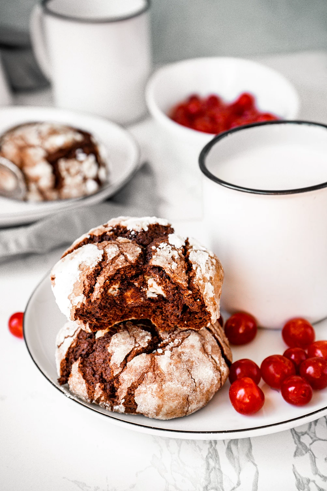

Präänikud

Koostisosad
Kogus
Jahu
180 g
Magustamata kakaopulber
40 g
Küpsetuspulber
1 tl
Söögisooda
0.25 tl
Soola
Näpuotsatäis
Võid
45
Suhkrut
30 g
Banaan
1 keskmine
Vaniljeekstrakt
0.5 tl
Sidrunimahl
1 tl
Tuhksuhkur
Töökäik
Eelkuumuta ahi 180 kraadini.
Segada kuivained (jahu, kakao, küptsetuspulber, sooda, sool) omavahel.
Mikserda toasoe või suhkruga. Lisa kahvliga purustatud banaan, sidrunimahl ja vaniljeekstrakt.
Lisa järkjärgult kuivainete segu, kasutades miksri madalamat kiirust.
Kui ained on segunenud, rulli käte vahel umbes 10 palli. Enne küpsetusplaadile panemist veereta läbi tuhksuhkrust ja vajuta kergelt lapikuks.
Küpsetseta ahjus ca 10-12 minutit.
Retsepti algallikas asub
siin